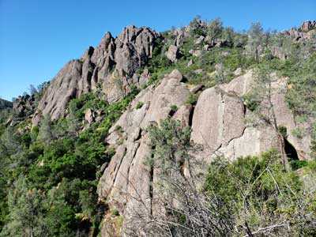
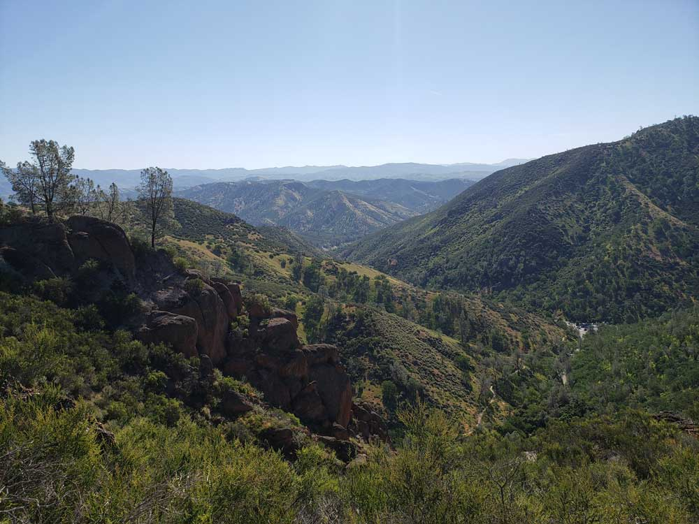
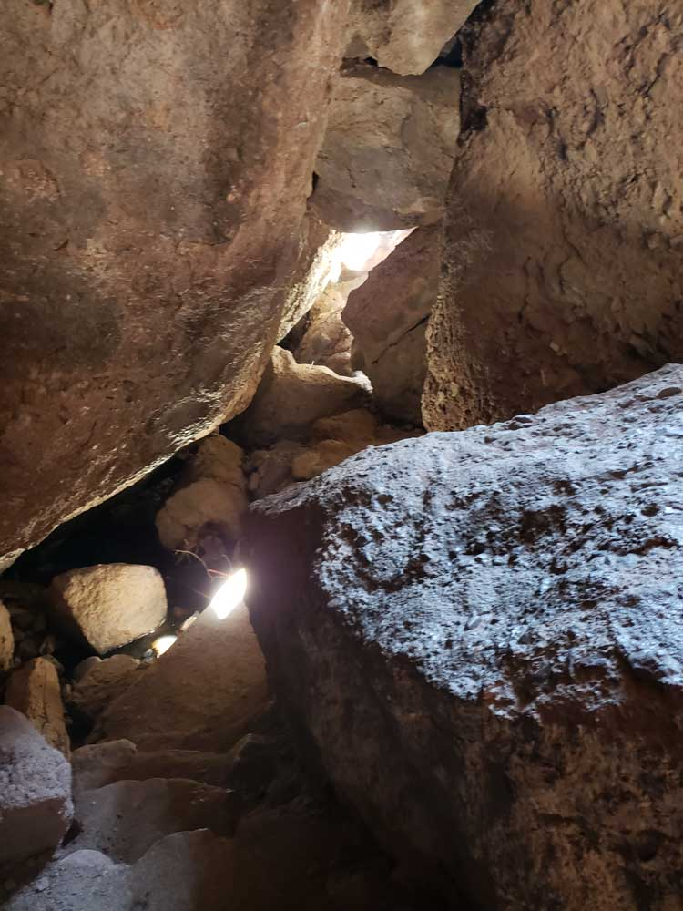
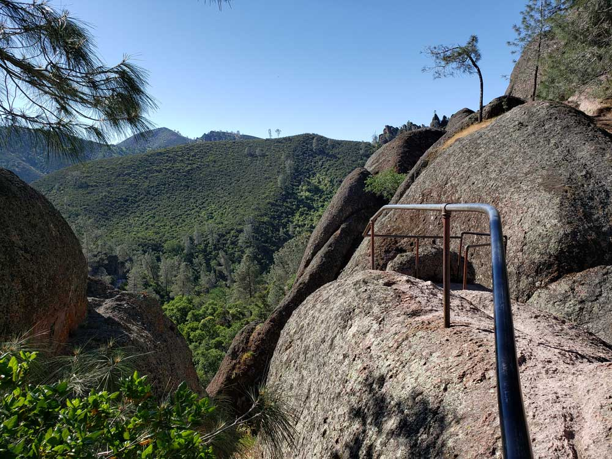
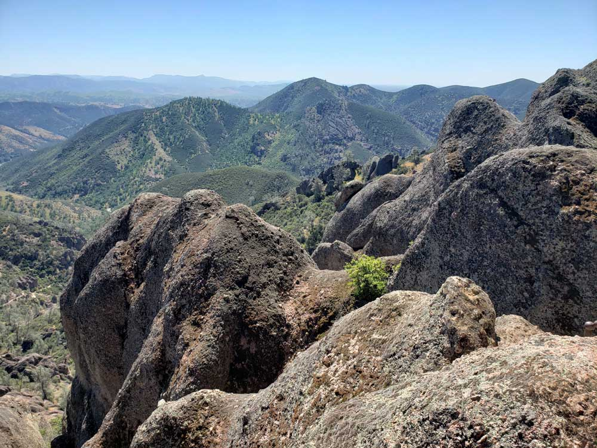
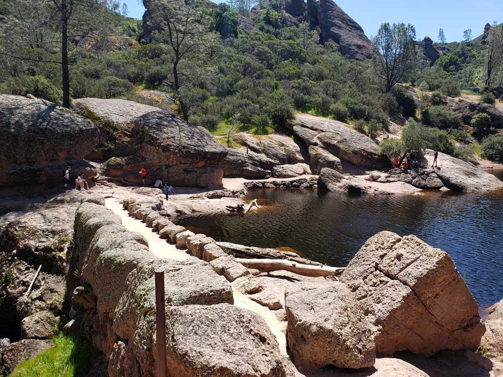
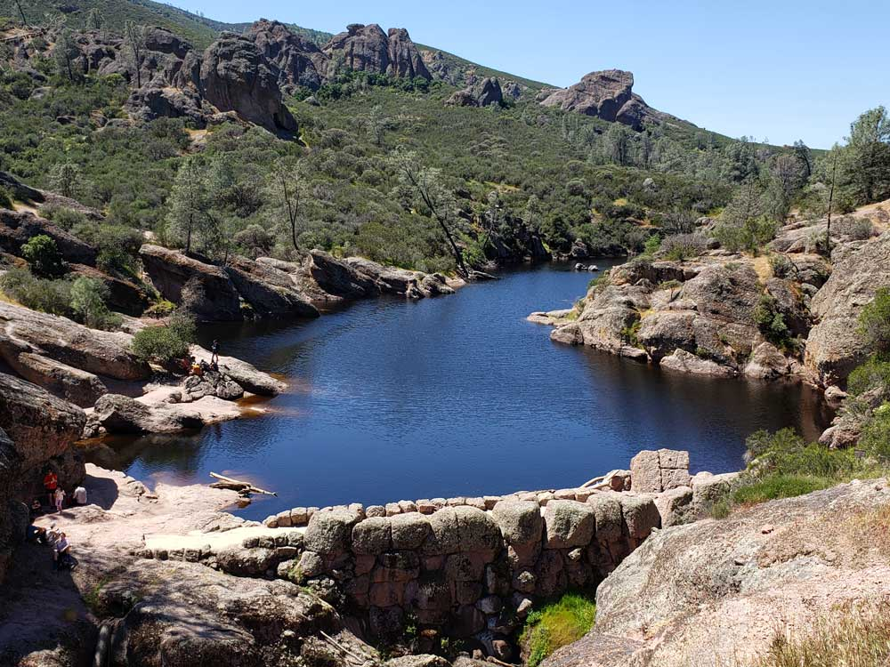
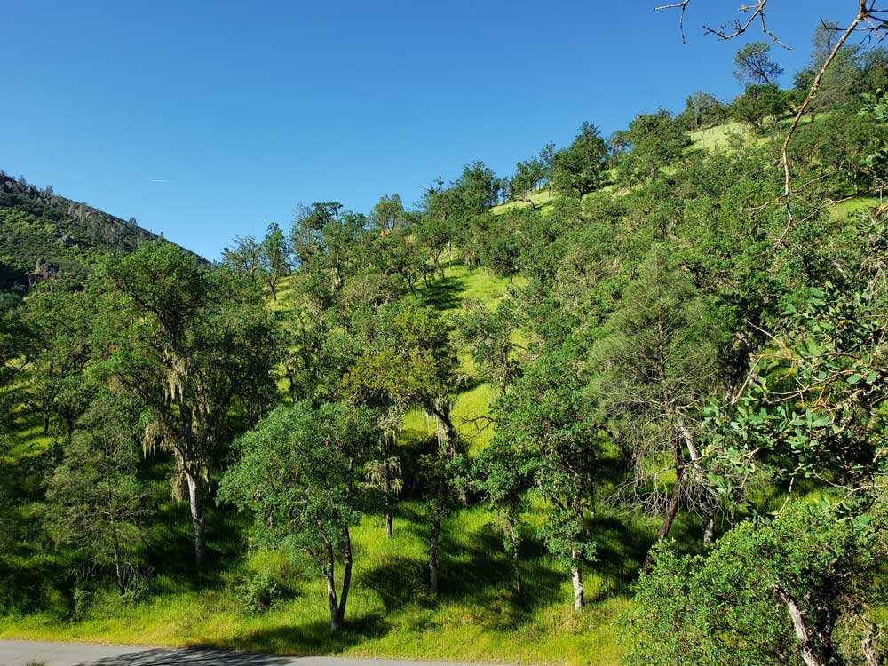
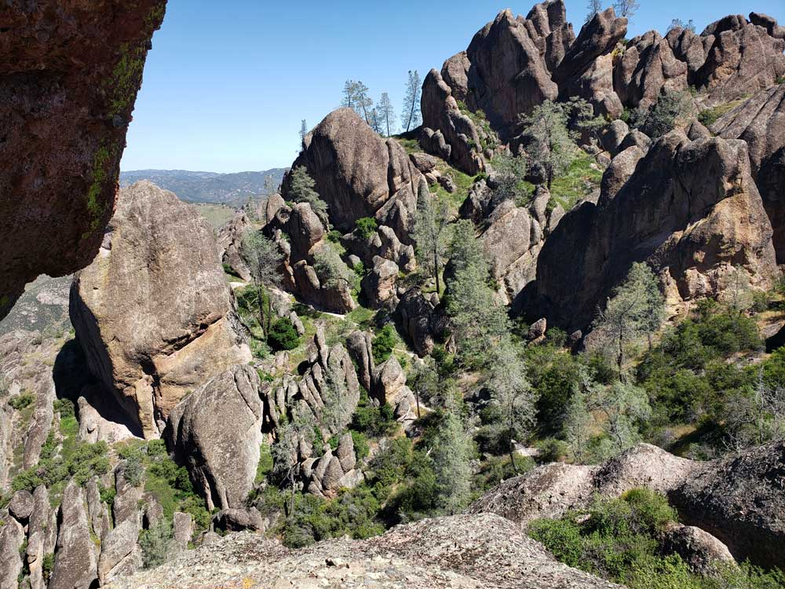
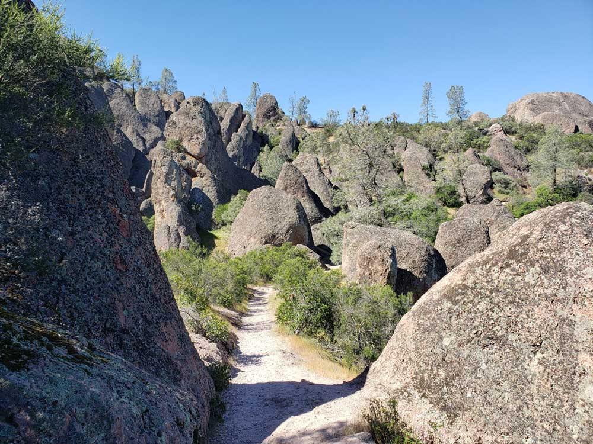

Pinnacles National Park Travel Guide
National Park protects eroded formations of the western half of an extinct volcano that has moved 200 miles from its original location on the San Andreas Fault, embedded in a portion of the California Pacific Coast Ranges
West Side: Gate open 7:30am to 8pm daily (day use only)
West Pinnacles Visitor Contact Station: 9am to 3pm daily
Bear Gulch Nature Center: Open intermittently
Accepts America The Beautiful Pass
How to Get There
From San Francisco (123 mi): Get on US-101 S. Follow US-101 S to CA-25 S in Santa Clara County. Take exit 353 from US-101 S. Follow CA-25 S to CA-146 W in San Benito County.
Overview
Pinnacles National Park protects about 26,000 acres of the Gabilan Mountains in Central California, east of the Salinas Valley. The park's towering rock spires, sheer cliffs, and boulder-roofed talus caves are the eroded remains of half of an ancient volcano. The Neenach Volcano erupted about 23 million years ago near present-day Lancaster, roughly 195 miles to the southeast. Over millions of years, movement along the San Andreas Fault split the volcano and carried this half northwest to where it stands today. The result is a landscape unlike anywhere else on the California coast, with jagged pinnacles rising above rolling hills of oak woodland and chaparral.
President Theodore Roosevelt proclaimed Pinnacles a national monument in 1908. On January 10, 2013, it became California's ninth national park, one of the newest in the country. Pinnacles is famous as one of the few places to see the endangered California condor in the wild, and it has served as a condor release and management site since 2003. Visitors come to hike through the High Peaks, explore the dark talus caves with a flashlight, watch condors soar over the cliffs, rock climb, and see the spring wildflowers. As one of the smaller and less crowded national parks, it is an easy day trip from the San Francisco Bay Area and the Monterey Peninsula.
Park Sections
Pinnacles is divided into two sections, the East Side and the West Side, and no road connects them. The East Side, reached on Highway 25 south of Hollister, is the more developed section, with the Pinnacles Visitor Center, campground, Bear Gulch Day Use Area, Bear Gulch Cave, and Bear Gulch Reservoir. The East Entrance is open 24 hours a day. The West Side, reached on Highway 146 from Soledad, has the Chaparral parking area, the West Pinnacles Visitor Contact Station, and the trails to Balconies Cave and the dramatic western face of the High Peaks. The West Entrance gate closes at night. The two sides are only about 2 miles apart by trail across the High Peaks, but driving between them takes more than an hour around the park by way of King City or Hollister.
Sightseeing and Exploring the Park
Pinnacles has no long scenic drive. The roads into each side are short, so most of the park's best views are reached on foot. On the West Side, the Chaparral parking area sits right at the base of towering rock formations, offering one of the most impressive roadside views in the park. On the East Side, the drive along Highway 25 passes through quiet ranch country and rolling hills on the way to the park. Short walks lead to Bear Gulch Reservoir, which is ringed by rock spires, and to overlooks along the Condor Gulch Trail. The best panoramic views are from the High Peaks, where narrow trails wind among the spires with views that stretch to the Salinas Valley and the Santa Lucia Mountains.
Hiking
Pinnacles has more than 30 miles of trails, from easy creekside walks to steep climbs. Easy and moderate hikes include the Moses Spring Trail to Bear Gulch Cave and Bear Gulch Reservoir (about 2 miles round trip), the Balconies Cave Trail from the West Side (about 2.4 miles round trip), and the Bench Trail and Old Pinnacles Trail along the creek. The park's most popular hike is the High Peaks Loop. It climbs through the spires along steep, narrow sections with steps carved into the rock and handrails. From the East Side, it is usually combined with the Condor Gulch Trail (about 5.3 miles), and from the West Side with the Juniper Canyon Trail. For a longer challenge, the trail to North Chalone Peak climbs to the highest point in the park (3,304 feet). The flat, shady trails are best on hot days, while the High Peaks are best in cooler weather. See the Pinnacles trails table for a full list.
Other Activities
The park's talus caves are a highlight for many visitors. They formed when huge boulders fell into narrow canyons and wedged above the creek, creating dark passages beneath. Bear Gulch Cave and Balconies Cave require a flashlight or headlamp, and visitors may need to duck, squeeze, and climb through. Parts of the caves close seasonally to protect a colony of Townsend's big-eared bats that raise their young there, and they may also close after heavy rain. Check the NPS website for current cave status before visiting. Pinnacles is also a popular rock climbing destination, with routes on the volcanic rock, although some formations close seasonally to protect nesting raptors. The park is a certified International Dark Sky Park, and rangers lead night sky programs and occasional night hikes. Birdwatching is excellent all year, and the campground has a seasonal swimming pool.
Flora and Wildlife
Pinnacles is one of the best places in the world to see the California condor, the largest land bird in North America, with a wingspan of up to 9.5 feet. Condors are most often seen soaring over the High Peaks and along the Condor Gulch Trail in the early morning and late afternoon. The park also hosts nesting prairie and peregrine falcons, golden eagles, and turkey vultures. At least 13 species of bats live in the caves and rocks, and the park has one of the highest concentrations of bee species in the world, with around 400 kinds. The threatened California red-legged frog lives at Bear Gulch Reservoir, and bobcats, gray foxes, black-tailed deer, and wild turkeys are also found here. In spring, the hillsides of chaparral and oak woodland fill with wildflowers, including shooting stars, California poppies, and lupine.
Access
Pinnacles is in Central California, about 80 miles southeast of San Jose. The East Side is about 2.5 hours from San Francisco by way of US 101 to Gilroy and Highway 25 through Hollister. The West Side is about an hour from Monterey by way of US 101 to Soledad and Highway 146. Highway 146 on the west side is narrow and winding and is not recommended for RVs or trailers. The closest major airport is San Jose Mineta International Airport, about 1.5 hours away. There is no public transportation to the park. The East Side's Bear Gulch parking area is small and often fills by mid-morning on spring weekends, so arrive early.
Seasons
Pinnacles is open all year. Spring (March through May) is the most popular season, with green hills, colorful wildflowers, flowing creeks, and comfortable hiking temperatures, but also the biggest crowds, especially on weekends. Summer is very hot and dry, with highs often near or above 100°F, so hikes should start early in the morning. Fall brings cooler temperatures and fewer visitors and is a good time to see condors. Winter is mild and often rainy, with uncrowded trails, although heavy rain can flood the caves and close them temporarily. The bat colony in Bear Gulch Cave leads to seasonal closures of all or part of the cave, typically in late spring and summer.
Camping and Lodging
There is no lodge in the park, but Pinnacles Campground on the East Side offers tent sites, RV sites with electric hookups, group sites, and a small number of tent cabins, along with a camp store and a seasonal swimming pool. Reservations are made on Recreation.gov. The West Side has no camping. Outside the park, Hollister, about 30 miles north of the East Entrance, and Soledad, about 12 miles from the West Entrance, have the closest hotels. Gilroy, King City, Gonzales, and Salinas offer more options. Many visitors combine a trip to Pinnacles with a stay in Monterey, Carmel, or the wine country of the Salinas Valley, about an hour away.
Visitor Centers
The Pinnacles Visitor Center on the East Side, near the campground, has exhibits, maps, and a park store and is the main place to get information and passes. The Bear Gulch Nature Center farther up the East Side road has exhibits on the park's wildlife and geology, but it is open only intermittently because of staffing. The West Pinnacles Visitor Contact Station near the West Entrance provides information, maps, and passes for visitors on the West Side. Hours vary by season.
Shuttle System
When it is operating, a free seasonal shuttle on the East Side runs between the Pinnacles Visitor Center and campground area and the Bear Gulch Day Use Area. It typically operates on weekends and holidays during the busy late winter and spring season, when the small Bear Gulch parking lot fills up early. The shuttle has been suspended at times because of staffing shortages, so check the NPS website for its current status. There is no shuttle on the West Side and no public transportation to the park.
This article uses material from the Wikipedia article "Pinnacles National Park", which is released under the Creative Commons Attribution-Share-Alike License 3.0
This article uses material from nps.gov "Pinnacles National Park", "Operating Hours & Seasons", and "Getting Around"
Featured Trail

High Peaks Trail
6.4 miles loop, 1840 feet
Main route through the most popular features of the park








